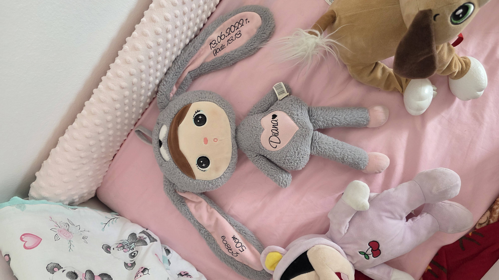

Księżycowa Diana
Kryptonim: Celestial Bunny Guardian

Oryginalna Lalka:
Pluszowy szary króliczek z haftem 'Diana 50cm / 2980g'
Metamorfizowana lalka z haftem metryczki narodzin, która stała się gwiezdną strażniczką. Jej długie uszy pokrywają świecące konstelacje, a z dłoni wylatują gwiezdne motyle.
💖 Kryształowe serce światła
🦋 Eteryczne motyle ochronne
⭐ Runiczne konstelacje
A magical fantasy superhero character version of the grey plush bunny doll from the image, completely isolated on a pure solid white background. The character has soft grey plush fabric, long floating bunny ears with glowing pink constellation runes, a glowing crystal heart on her chest, and is levitating while holding glowing pink magical spirit butterflies and swirling stardust rings. Clean white studio background, isolated character cutout, 3D animated movie render.